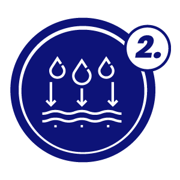

Tea Tree Oil
Natural antfungal and anti-inflammatory agent.
advertorial
FungEase is a powerful antifungal cream designed to combat foot fungus effectively. Its clinically proven formula provides rapid relief from itching, burning, and discomfort, while also targeting the root cause of the infection. With regular use, FungEase promotes healthier feet and helps prevent recurrence of foot fungus.
Foot fungus, also known as athlete's foot, is a common fungal infection that affects the skin of the feet. It is caused by various types of fungi, particularly those that thrive in warm, moist environments.
Warm, Moist Environments: Foot fungus thrives in warm, damp places like locker rooms and communal showers.
Sweaty Feet: Excessive sweating creates a moist environment inside shoes, increasing the risk of foot fungus.
Poor Foot Hygiene: Inadequate washing and drying of feet, especially between toes, can lead to fungal growth.
Tight, Non-Breathable Shoes: Shoes that trap moisture and heat provide an ideal environment for fungal growth.
Walking Barefoot in Public Areas: Walking barefoot in gyms, pools, and showers exposes feet to fungal infections.
Itching and Burning: Persistent itching and burning sensations on the feet, particularly between the toes, are common signs of foot fungus.
Redness and Inflammation: The affected skin may appear red, inflamed, and irritated, with visible signs of discomfort.
Cracking and Peeling: Skin on the feet may crack, peel, or develop scales, especially in areas prone to moisture accumulation.
Foul Odor: A strong, unpleasant odor emanating from the feet, often resembling a musty or sour smell, can indicate a fungal infection.
Changes in Nails: Foot fungus can spread to the toenails, causing them to become thickened, discolored, and brittle over time.
FungEase stands out as the premier solution for tackling foot fungus, offering several key advantages:
Clinically Proven Formula: Our formula is backed by clinical research, ensuring efficacy in targeting and eliminating foot fungus at its source.
Fast-Acting Relief: Experience rapid relief from itching, burning, and discomfort with FungEase's potent formula, providing quick and effective treatment.
Gentle yet Powerful: FungEase is gentle on the skin while still delivering powerful antifungal properties, making it suitable for all skin types and safe for the whole family to use.
Easy Application: With its convenient cream form, FungEase can be effortlessly applied to the affected areas, seamlessly integrating into your daily foot care routine.
Comprehensive Solution: FungEase not only treats the symptoms of foot fungus but also helps prevent recurrence, promoting long-term foot health and comfort.

Grieater relief
Faster recovery
Long lasting protection
At FungEase, we believe in harnessing the power of nature to combat foot fungus effectively. Our carefully selected ingredients work synergistically to provide unparalleled relief and protection. Here's what makes FungEase stand out:
Natural antfungal and anti-inflammatory agent.
Inhibits fungal growth by disrupting cell membranes.
Kills fungus by disrupting cell membranes.
FungEase's unique blend of ingredients is specifically formulated to expedite the treatment process, providing faster relief and resolution of foot fungus. Here's how our advanced formulation makes the treatment faster:

1. Clean the feet and apply the cream
2. Let the Cream Absorb
3. Repeat treatment as directed
1. How long does it take for FungEase to work?
2. How often should I apply FungEase?
3. Can FungEase be used preventively?
4. Are there any side effects associated with FungEase?

FREE SHIPPING

TAKES 1 TO 3 DAYS

PAY WHEN YOU RECEIVE

158 reviews
Free shipping over 30 euros
Emily H.
Verified Buyer
"Best foot cream for athlete's foot! Instant relief and noticeable improvement in foot condition. A must-have for fungal infections."
David L.
Verified Buyer
"Game-changer for toenail fungus! Fast-acting and non-greasy formula. Confidence in my feet restored!"
Sarah M.
Verified Buyer
"Finally found relief from foot fungus! This cream works wonders - within a week, itching and redness were significantly reduced."